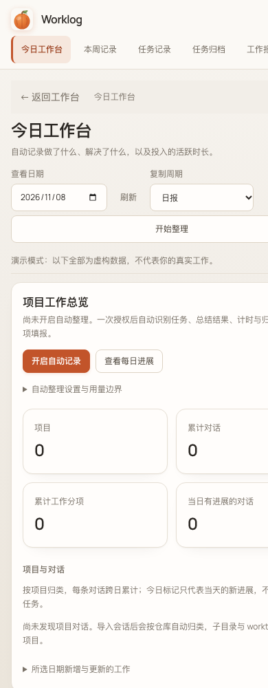
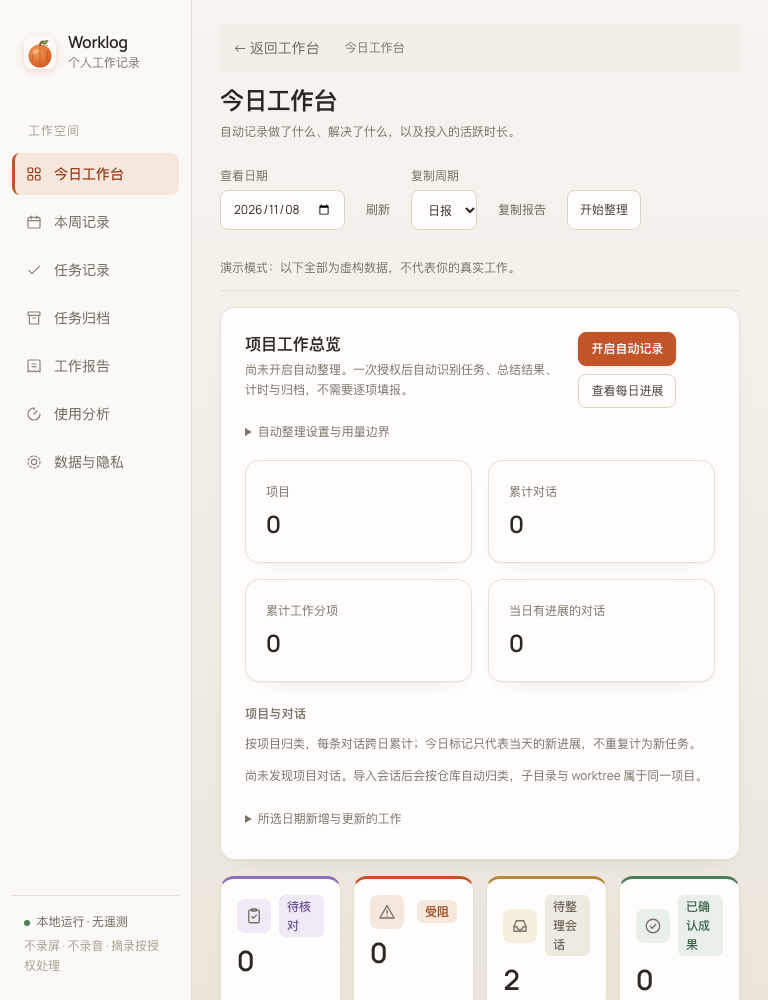
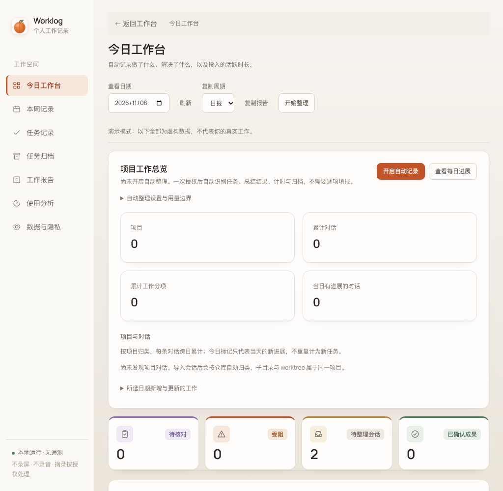

对 static/ 目录下 3 份样式表、8 个脚本与页面结构进行审查。所有结论均基于真实 Chrome 在 390 / 768 / 1024 / 1440px 四档断点的渲染验证，以及 WCAG 相对亮度公式的实测对比度计算 —— 不是主观审美判断。
视觉语言（暖陶土 + 米白底、克制的阴影、克制的字重）是一次完整的设计表达。问题不在审美，而在响应式系统的工程实现与若干"定义了却永不生效"的实现漏洞。
390px 视口下页面产生横向滚动，KPI 卡片第 2 列、「项目与对话」面板右边缘、导航第 5 项之后的入口全部被截断。这是截图实测结果，非推测。


@media (max-width: 700px) {
.actions label { flex: 1 1 105px; }
#date-control { flex: 0 0 140px; } /* 固定 140px，完全不收缩 */
#open-tasks { flex: 1; min-width: 130px; }
.actions button { flex: 1 1 64px; }
}
.actions 虽是 flex-wrap: wrap 容器，但子项缺少 min-width: 0。Flex 项目的默认 min-width: auto 会阻止其收缩至内容宽度以下，而 #date-control 的 flex: 0 0 140px 更是硬抗。三者的最小宽度之和已超出 358px 可用宽度，撑破 main 后产生整页横向滚动。
@media (max-width: 700px) {
.actions { width: 100%; }
.actions > * { min-width: 0; } /* 允许收缩，关键 */
#date-control { flex: 1 1 100%; } /* 日期独占一行 */
.actions button { flex: 1 1 calc(50% - 3px); }
}
main { overflow-x: clip; } /* 兜底防护 */
样式中定义了用于表达「占当日比例」的底部进度条，但全库交叉检索确认：--fill 变量在 CSS 中出现 1 次，任何 JS / HTML 都没有给它赋值，fallback 为 0%。这条设计意图中的视觉编码，宽度恒为 0，用户从未看见过。
.overview-count::after {
content: ""; position: absolute; inset: auto 0 0 0;
height: 3px;
width: var(--fill, 0%); /* ← 从未被赋值，恒为 0 */
background: var(--kpi, var(--blue)); opacity: .45;
}
修复 · 若产品需要这条进度条
// tasks.js 渲染计数处补充
const total = Math.max(1, tasks.length);
$("review-count-link").style.setProperty("--fill", `${needsReview / total * 100}%`);
$("blocked-count-link").style.setProperty("--fill", `${blocked / total * 100}%`);
$("outcome-count-link").style.setProperty("--fill", `${confirmed / total * 100}%`);
$("inbox-count-link").style.setProperty("--fill", `${untriaged.length / total * 100}%`);
若产品上不需要，应整段删除 ::after 规则。保留"定义了却永不生效"的样式，会让后续维护者误以为存在一个他们没找到的赋值点。
「今日共 N 条记录」读的是全量 totalTasks，而下方 4 张卡片的数字只统计已载入的前 100 条。当某天记录超过 100 条时，用户会看到「今日共 180 条」，但 4 张卡片加起来只有 100 —— 而这 4 张卡片正是点击后跳转的入口。
| 指标位 | 数据源 | 口径 |
|---|---|---|
| 今日共 N 条 | this.totalTasks | 全量 |
| 待核对 | tasks | 仅已载入 |
| 受阻 | tasks | 仅已载入 |
| 已确认成果 | tasks | 仅已载入 |
| 待整理会话 | this.current.sessions | 全量 |
代码中确有 #overview-record-scope 免责说明，但它以 12px 次要灰色呈现，与 28px 的 KPI 大字形成强烈视觉权重反差 —— 用户不会读。这不是文案问题，是信息架构问题。
统一为全量口径（后端 /api/tasks 增加聚合计数返回），或把卡片数字显示为 100+ 并把说明升级为可见的 badge。绝不能让「总数 A、明细 B」同屏并存而无强提示。
三份样式表的断点分散在 700 / 1050 / 1100 / 1150 四个值，彼此不协调。结果是 768px 平板下侧栏仍占 192px，主内容区只剩约 576px，而 .actionable-stats 依然是 repeat(4, 1fr)，导致第 4 张 KPI 卡片被裁切、状态标签逐字换行。

@media (max-width: 1100px) {
.actionable-stats { grid-template-columns: repeat(2, minmax(0, 1fr)); }
}
.kpi-head { flex-wrap: nowrap; min-width: 0; }
.status-label { white-space: nowrap; } /* 禁止标签逐字折行 */
按 WCAG 2.1 相对亮度公式实测 21 组配色，其中 5 组不达标：
| 用途 | 前景 / 背景 | 实测比值 | 结论 |
|---|---|---|---|
| 「工作空间」、footer、placeholder | #a89e90 / #fffdfb | 2.60 | 严重不达标 |
| 侧栏「工作空间」 | #a89e90 / #fbf9f5 | 2.51 | 严重不达标 |
| 待整理会话 KPI 图标 | #b8863b / #f7efdd | 2.82 | 图标不可辨 |
| 日卡片摘要、待跟进说明 | #7a7268 / #faf7f2 | 4.43 | 临界不合格 |
| 待核对 KPI 图标（18px） | #8b6fb8 / #efeaf6 | 3.51 | 仅够大图标 |
其余 16 组（正文 #746b60 5.15、按钮白字 #c2542a 4.57、五态状态徽章 5.20–6.03）全部达标，说明配色系统本体是可靠的 —— 问题集中在几个"最淡的灰"被用在了文字上。
#a89e90 → #8a8073（达 4.6+）；amber 图标 #b8863b → #96682a；浅卡片上的 #7a7268 → #6f675d。
.task-batch button 仅 28px 高，低于 WCAG 2.2 的 24px 底线之外的舒适区.task-select 批量勾选框仅 16×16px，且 margin-top: 14px 与标题基线错位.task-filter、.project-group > button、.summary-card > button 均为 32px.session-more > summary 无 min-height，实际约 32pxiOS HIG 建议 44×44，Material 建议 48×48。16px 复选框在触屏上几乎无法准确点中。
修复.task-select { width: 20px; height: 20px; }
.task-select::before { content: ""; position: absolute; inset: -12px; } /* 扩大热区至 44px */
.task-batch button { min-height: 36px; }
同一个变量在两处定义，后加载者静默胜出：
| Token | style.css | workbench.css | 最终生效 |
|---|---|---|---|
--ink | #26221e | #2b2723 | workbench |
--muted | #746b60 | #7a7268 | workbench |
--accent | #c2542a | #c2542a | 一致 |
更麻烦的是：全库有约 40+ 处硬编码颜色（#5a5248、#6d655a、#7d7264、#a89e90、#5f584c、#4a4238、#6f675d），形成 7 个互不相同的"次要文字灰"。这是视觉碎片化的根源，也让 P1-2 的对比度修复无法一次到位。
抽取单一 tokens.css 置于最前，只保留 --text-1/2/3 三级文字色，删除后两份 :root 里的重复定义，全部字面量改写为变量引用。
| # | 问题 | 位置 | 影响 |
|---|---|---|---|
| 1 | :focus{outline:none} 仅用 stroke 加粗表达焦点 | workbench.css:253 | 违反 WCAG 2.4.7，键盘用户难以确认选中扇区 |
| 2 | 焦点环色与暖色选中背景对比度不足 3:1 | style.css:118 | 选中态与焦点态混淆 |
| 3 | .session-more 隐藏了原生三角却未替换图标 | workbench.css:363 | 用户不知道该项可点击 |
| 4 | #status 用 role="status" 承载三种语义，错误时不转 alert | index.html:24 | 屏幕阅读器不主动播报加载失败 |
| 5 | 6 个 aria-live 区域并存，30s 轮询持续触发 | index.html | SR 用户被反复打断 |
| 6 | 30s 自动刷新无暂停开关 | app.js:543 | 阅读长报告时内容与滚动位置跳动 |
| 7 | 字体仅提供 ttf，未用 woff2 | fonts/ | 首屏字体体积偏大 |
| 8 | 无 prefers-color-scheme: dark，写死 light | style.css:10 | 深色系统用户被强制浅色 |
| 9 | 打印时 .report-evidence{display:none} | style.css:1408 | 导出 PDF 丢失证据引用，与产品定位冲突 |
三份 CSS 各自追加 @media，累计 9 个断点声明，值域分散。没有统一栅格，没有流式排版（仅 main 的 padding 用了 clamp()）。这正是 P1-1 断层与 P0-1 溢出的共同土壤。
建议：确立 4 档（480 / 768 / 1024 / 1280），所有组件在同一处声明响应式；或引入容器查询 @container，让卡片根据自身容器宽度自适应，而非依赖全页断点。
--shadow-md 被同时用于 .panel、.stats article、.overview-count、.focus-row、.task-list-item、.ledger-record —— 6 类语义完全不同的容器共享同一层级。
结果是所有卡片"浮在同一个高度"，截图可见 KPI 卡片与主面板的视觉权重几乎相同，用户视线找不到落点。
建议：--shadow-1 用于列表项（hover 才升级）、--shadow-2 用于面板、--shadow-3 仅用于 KPI 等强调容器。
1440px 首屏同时呈现 13 个可交互区：品牌 → 导航 → 返回栏 → 标题 → 描述 → 5 个操作控件 → 状态提示 → 自动记录开关 + 2 按钮 → 4 统计卡 → 折叠说明 → 4 个 KPI → 待办列表。
产品意图是「先核对，再整理」，但 .automatic-workbench（项目总览）排在 .actionable-stats（真正需要行动的 KPI）之前；且当 4 个数字全为 0 时，它仍占据约 360px 高度。真正的行动区被信息区压到首屏之外。
建议：0 值时把「项目工作总览」折叠为单行摘要；把 4 个行动 KPI 提升到标题正下方。
font-variant-numeric: tabular-nums，这是数据仪表盘的必备细节，很多产品遗漏creationByDay 保存未提交输入（tasks.js:107），交互健壮性超出多数同类产品overflow-wrap: anywhere，长 token 不会撑破布局break-inside: avoid、break-after: avoid 用得准确，是少数认真做打印的产品prefers-reduced-motion 覆盖（虽仅 3 处，方向正确）python3 app.py serve --db /tmp/wl-audit.sqlite3 后，用 Chrome 在对应视口宽度截图；对比度数值由 WCAG 2.1 相对亮度公式计算得出，脚本已随报告附上。所有 P0 项都经过代码检索与真实渲染双重确认，不是启发式推断。